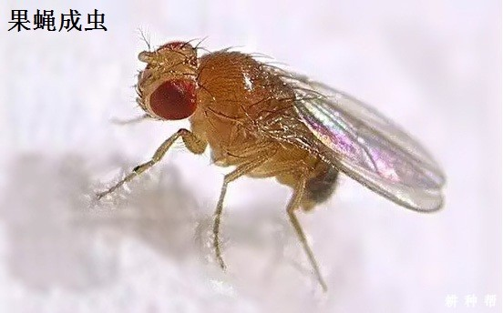

果蝇是杨梅果实的主要害虫，杨梅果蝇有哪些危害？杨梅果蝇什么时候发生？杨梅果蝇如何防治？以下耕种帮就作详细介绍，供网友们参考。

一、果蝇对杨梅有哪些危害
果蝇成虫在杨梅果实成熟期，雌果蝇在杨梅果实上产卵，孵化后的幼虫蛀食危害，受害果实凸凹不平，果汁外溢和落果，使产量下降，质量变劣。当杨梅采收后，卵孵化成幼虫爬出果面，让杨梅食用者顿时生厌。同时也让杨梅果实的产品价值，严重影响鲜销、贮藏、加工及商品价格。
二、杨梅果蝇发生规律
杨梅果蝇世代重叠，不易划分代数，各种虫态同时并存，当气温10℃以上时，果蝇成虫出现。在气温21－25℃、湿度75%－85%条件下，一个世代历期4－7天。
在杨梅进入成熟期后，果实变软，果蝇有合适的食物，此期为果蝇发生盛期，随着采收，杨梅逐渐减少，果蝇数量随之下降。杨梅果蝇主要栖息在具有发酵物、潮湿阴凉的生态环境，所以在杨梅采收后，树上残次果和树下落地果腐烂，又会出现盛发期，而随着残次果及落地果的逐渐消失，虫口又随食物的缺少而下降。杨梅果蝇发生盛期在6月中下旬和7月中下旬两个食物条件极好的时期。在清晨和黄昏为杨梅果蝇成虫的日活动高峰期。
三、杨梅防治果蝇方法
1、作好杨梅树的修剪，及时剪除病残枝及茂密枝，调节通风透光，保持果园适当的温湿度，结合修剪，清理果园，尤其是腐烂的杂物及发酵物。减少虫源。
2、在杨梅果实成熟期，用蜂蜜加少许食用醋，再加少量敌百虫，调匀后盛入容器放在果实里诱杀。也可将调好的药液刷在厚纸片上挂在杨梅园内诱杀果蝇成虫。
3、在5月中下旬对杨梅园除草，同时用50%辛硫磷乳油1000倍液对地面喷雾处理，压低虫源基数，可减少发生量；拣除杨梅成熟前的生理落果和成熟采收期的落地烂果，送出园外一定距离的地方覆盖厚土或用30%敌百虫乳油500倍液喷雾处理，可避免其生存繁殖后返回园内危害。